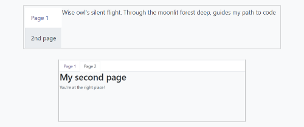

Owl Components¶
The Odoo Javascript framework uses a custom component framework called Owl. It is a declarative component system, loosely inspired by Vue and React. Components are defined using QWeb templates, enriched with some Owl specific directives. The official Owl documentation contains a complete reference and a tutorial.
Importante
Although the code can be found in the web module, it is maintained from a
separate GitHub repository. Any modification to Owl should therefore be made
through a pull request on https://github.com/odoo/owl.
Nota
Currently, all Odoo versions (starting in version 14) share the same Owl version.
Using Owl components¶
The Owl documentation already documents in detail the Owl framework, so this page will only provide Odoo specific information. But first, let us see how we can make a simple component in Odoo.
const { useState } = owl.hooks;
const { xml } = owl.tags;
class MyComponent extends Component {
setup() {
this.state = useState({ value: 1 });
}
increment() {
this.state.value++;
}
}
MyComponent.template = xml
`<div t-on-click="increment">
<t t-esc="state.value">
</div>`;
This example shows that Owl is available as a library in the global namespace as
owl: it can simply be used like most libraries in Odoo. Note that we
defined here the template as a static property, but without using the static
keyword, which is not available in some browsers (Odoo javascript code should
be Ecmascript 2019 compliant).
We define here the template in the javascript code, with the help of the xml
helper. However, it is only useful to get started. In practice, templates in
Odoo should be defined in an xml file, so they can be translated. In that case,
the component should only define the template name.
In practice, most components should define 2 or 3 files, located at the same
place: a javascript file (my_component.js), a template file (my_component.xml)
and optionally a scss (or css) file (my_component.scss). These files should
then be added to some assets bundle. The web framework will take care of
loading the javascript/css files, and loading the templates into Owl.
Here is how the component above should be defined:
const { useState } = owl.hooks;
class MyComponent extends Component {
...
}
MyComponent.template = 'myaddon.MyComponent';
And the template is now located in the corresponding xml file:
<?xml version="1.0" encoding="UTF-8" ?>
<templates xml:space="preserve">
<t t-name="myaddon.MyComponent" owl="1">
<div t-on-click="increment">
<t t-esc="state.value"/>
</div>
</t>
</templates>
Odoo code is not yet completely made in Owl, so it needs a way to tell the
difference between Owl templates (new code) and old templates (for components). To
do that in a backward-compatible way, all new templates should be defined with
the owl attribute set to 1.
Nota
Do not forget to set owl="1" in your Owl templates!
Nota
Template names should follow the convention addon_name.ComponentName.
Ver también
Best practices¶
First of all, components are classes, so they have a constructor. But constructors
are special methods in javascript that are not overridable in any way. Since this
is an occasionally useful pattern in Odoo, we need to make sure that no component
in Odoo directly uses the constructor method. Instead, components should use the
setup method:
// correct:
class MyComponent extends Component {
setup() {
// initialize component here
}
}
// incorrect. Do not do that!
class IncorrectComponent extends Component {
constructor(parent, props) {
// initialize component here
}
}
Another good practice is to use a consistent convention for template names:
addon_name.ComponentName. This prevents name collision between odoo addons.
Reference List¶
The Odoo web client is built with Owl components. To make it easier, the Odoo javascript framework provides a suite of generic components that can be reused in some common situations, such as dropdowns, checkboxes or datepickers. This page explains how to use these generic components.
Technical Name |
Short Description |
|---|---|
a swiper component to perform actions on touch swipe |
|
a simple checkbox component with a label next to it |
|
a list of colors to choose from |
|
full-featured dropdown |
|
a component to navigate between pages using tabs |
|
a small component to handle pagination |
ActionSwiper¶
Location¶
@web/core/action_swiper/action_swiper
Description¶
This is a component that can perform actions when an element is swiped horizontally. The swiper is wrapping a target element to add actions to it. The action is executed once the user has released the swiper passed a portion of its width.
<ActionSwiper onLeftSwipe="Object" onRightSwipe="Object">
<SomeElement/>
</ActionSwiper>
The simplest way to use the component is to use it around your target element directly in an xml template as shown above. But sometimes, you may want to extend an existing element and would not want to duplicate the template. It is possible to do just that.
If you want to extend the behavior of an existing element, you must place the element inside, by wrapping it directly. Also, you can conditionnally add props to manage when the element might be swipable, its animation and the minimum portion to swipe to perform the action.
You can use the component to interact easily with records, messages, items in lists and much more.

The following example creates a basic ActionSwiper component. Here, the swipe is enabled in both directions.
<ActionSwiper
onRightSwipe="
{
action: '() => Delete item',
icon: 'fa-delete',
bgColor: 'bg-danger',
}"
onLeftSwipe="
{
action: '() => Star item',
icon: 'fa-star',
bgColor: 'bg-warning',
}"
>
<div>
Swipable item
</div>
</ActionSwiper>
Nota
Actions are permuted when using right-to-left (RTL) languages.
Props¶
Name |
Type |
Description |
|---|---|---|
|
|
optional boolean to determine if a translate effect is present during the swipe |
|
|
optional animation that is used after the swipe ends ( |
|
|
if present, the actionswiper can be swiped to the left |
|
|
if present, the actionswiper can be swiped to the right |
|
|
optional minimum width ratio that must be swiped to perform the action |
You can use both onLeftSwipe and onRightSwipe props at the same time.
The Object’s used for the left/right swipe must contain:
action, which is the callableFunctionserving as a callback. Once the swipe has been completed in the given direction, that action is performed.
iconis the icon class to use, usually to represent the action. It must be astring.
bgColoris the background color, given to decorate the action. can be one of the following bootstrap contextual color (danger,info,secondary,successorwarning).Those values must be given to define the behavior and the visual aspect of the swiper.
Example: Extending existing components¶
In the following example, you can use xpath’s to wrap an existing element
in the ActionSwiper component. Here, a swiper has been added to mark
a message as read in mail.
<xpath expr="//*[hasclass('o_Message')]" position="after">
<ActionSwiper
onRightSwipe="messaging.device.isMobile and messageView.message.isNeedaction ?
{
action: () => messageView.message.markAsRead(),
icon: 'fa-check-circle',
bgColor: 'bg-success',
} : undefined"
/>
</xpath>
<xpath expr="//ActionSwiper" position="inside">
<xpath expr="//*[hasclass('o_Message')]" position="move"/>
</xpath>
CheckBox¶
Location¶
@web/core/checkbox/checkbox
Description¶
This is a simple checkbox component with a label next to it. The checkbox is linked to the label: the checkbox is toggled whenever the label is clicked.
<CheckBox value="boolean" disabled="boolean" t-on-change="onValueChange">
Some Text
</CheckBox>
Props¶
Name |
Type |
Description |
|---|---|---|
|
|
if true, the checkbox is checked, otherwise it is unchecked |
|
|
if true, the checkbox is disabled, otherwise it is enabled |
ColorList¶
Location¶
@web/core/colorlist/colorlist
Description¶
The ColorList let you choose a color from a predefined list. By default, the component displays the current
selected color, and is not expandable until the canToggle props is present. Different props can change its
behavior, to always expand the list, or make it act as a toggler once it is clicked, to display the list of
available colors until a choice is selected.
Props¶
Name |
Type |
Description |
|---|---|---|
|
|
optional. Whether the colorlist can expand the list on click |
|
|
list of colors to display in the component. Each color has a unique |
|
|
optional. If true, the list is always expanded |
|
|
optional. If true, the list is expanded by default |
|
|
callback executed once a color is selected |
|
|
optional. The color |
Color id’s are the following:
Id |
Color |
|---|---|
|
|
|
|
|
|
|
|
|
|
|
|
|
|
|
|
|
|
|
|
|
|
|
|
Dropdown¶
Location¶
@web/core/dropdown/dropdown and @web/core/dropdown/dropdown_item
Description¶
Dropdowns are surprisingly complicated components. They need to provide many features such as:
Toggle the item list on click
Direct siblings dropdowns: when one is open, toggle others on hover
Close on outside click
Optionally close the item list when an item is selected
Call a function when the item is selected
Support sub dropdowns, up to any level
SIY: style it yourself
Configurable hotkey to open/close a dropdown or select a dropdown item
Keyboard navigation (arrows, tab, shift+tab, home, end, enter and escape)
Reposition itself whenever the page scrolls or is resized
Smartly chose the direction it should open (right-to-left direction is automatically handled).
To solve these issues once and for all, the Odoo framework provides a set of two
components: a Dropdown component (the actual dropdown), and DropdownItem,
for each element in the item list.
<Dropdown>
<t t-set-slot="toggler">
<!-- "toggler" slot content is rendered inside a button -->
Click me to toggle the dropdown menu !
</t>
<!-- "default" slot content is rendered inside a div -->
<DropdownItem onSelected="selectItem1">Menu Item 1</DropdownItem>
<DropdownItem onSelected="selectItem2">Menu Item 2</DropdownItem>
</Dropdown>
Props¶
A <Dropdown/> component is simply a <div class="dropdown"/> having a
<button class="dropdown-toggle"/> next to menu div
(<div class="dropdown-menu"/>). The button is responsible for the menu
being present in the DOM or not.
Dropdown |
Type |
Description |
|---|---|---|
|
boolean |
initial dropdown open state (defaults to |
|
string |
additional css class applied to the dropdown menu |
|
string |
additional css class applied to the toggler |
|
string |
hotkey to toggle the opening through keyboard |
|
string |
add a tooltip on the toggler |
|
function |
hook to execute logic just before opening. May be asynchronous. |
|
boolean |
if true, only toggle the dropdown when the button is clicked on (defaults to |
|
string |
title attribute content for the |
|
string |
defines the desired menu opening position. RTL direction is automatically applied. Should be a valid usePosition hook position. (default: |
|
|
when set to |
A <DropdownItem/> is simply a span (<span class="dropdown-item"/>).
When a <DropdownItem/> is selected, it calls its onSelected prop. If this prop is a method, make sure it is bound if the method need to use the this value.
DropdownItem |
Type |
Description |
|---|---|---|
|
Function |
a function that will be called when the dropdown item is selected. |
|
|
when the item is selected, control which parent dropdown will get closed:
none, closest or all (default = |
|
string |
optional hotkey to select the item |
|
string |
if provided the DropdownItem will become an |
|
string |
optional title attribute which will be passed to the root node of the DropdownItem. (default: not provided) |
|
Object |
optional object containing values that should be added to the root element’s dataset. This can be used so that the element is easier to find programmatically, for example in tests or tours. |
Technical notes¶
The rendered DOM is structured like this:
<div class="dropdown">
<button class="dropdown-toggle">Click me !</button>
<!-- following <div/> will or won't appear in the DOM depending on the state controlled by the preceding button -->
<div class="dropdown-menu">
<span class="dropdown-item">Menu Item 1</span>
<span class="dropdown-item">Menu Item 2</span>
</div>
</div>
To properly use a <Dropdown/> component, you need to populate two
OWL slots :
togglerslot: it contains the toggler elements of your dropdown and is rendered inside the dropdownbutton(unless thetogglerprop is set toparent),defaultslot: it contains the elements of the dropdown menu itself and is rendered inside the<div class="dropdown-menu"/>. Although it is not mandatory, there is usually at least oneDropdownIteminside themenuslot.
When several dropdowns share the same parent element in the DOM, then they are considered part of a group, and will notify each other about their state changes. This means that when one of these dropdowns is open, the others will automatically open themselves on mouse hover, without the need for a click.
Example: Direct Siblings Dropdown¶
When one dropdown toggler is clicked (File , Edit or About), the others will open themselves on hover.
<div>
<Dropdown>
<t t-set-slot="toggler">File</t>
<DropdownItem onSelected="() => this.onItemSelected('file-open')">Open</DropdownItem>
<DropdownItem onSelected="() => this.onItemSelected('file-new-document')">New Document</DropdownItem>
<DropdownItem onSelected="() => this.onItemSelected('file-new-spreadsheet')">New Spreadsheet</DropdownItem>
</Dropdown>
<Dropdown>
<t t-set-slot="toggler">Edit</t>
<DropdownItem onSelected="() => this.onItemSelected('edit-undo')">Undo</DropdownItem>
<DropdownItem onSelected="() => this.onItemSelected('edit-redo')">Redo</DropdownItem>
<DropdownItem onSelected="() => this.onItemSelected('edit-find')">Search</DropdownItem>
</Dropdown>
<Dropdown>
<t t-set-slot="toggler">About</t>
<DropdownItem onSelected="() => this.onItemSelected('about-help')">Help</DropdownItem>
<DropdownItem onSelected="() => this.onItemSelected('about-update')">Check update</DropdownItem>
</Dropdown>
</div>
Example: Multi-level Dropdown (with t-call)¶
This example shows how one could make a File dropdown menu, with submenus for
the New and Save as... sub elements.
<t t-name="addon.Dropdown.File" owl="1">
<Dropdown>
<t t-set-slot="toggler">File</t>
<DropdownItem onSelected="() => this.onItemSelected('file-open')">Open</DropdownItem>
<t t-call="addon.Dropdown.File.New"/>
<DropdownItem onSelected="() => this.onItemSelected('file-save')">Save</DropdownItem>
<t t-call="addon.Dropdown.File.Save.As"/>
</Dropdown>
</t>
<t t-name="addon.Dropdown.File.New" owl="1">
<Dropdown>
<t t-set-slot="toggler">New</t>
<DropdownItem onSelected="() => this.onItemSelected('file-new-document')">Document</DropdownItem>
<DropdownItem onSelected="() => this.onItemSelected('file-new-spreadsheet')">Spreadsheet</DropdownItem>
</Dropdown>
</t>
<t t-name="addon.Dropdown.File.Save.As" owl="1">
<Dropdown>
<t t-set-slot="toggler">Save as...</t>
<DropdownItem onSelected="() => this.onItemSelected('file-save-as-csv')">CSV</DropdownItem>
<DropdownItem onSelected="() => this.onItemSelected('file-save-as-pdf')">PDF</DropdownItem>
</Dropdown>
</t>
Example: Multi-level Dropdown (nested)¶
<Dropdown>
<t t-set-slot="toggler">File</t>
<DropdownItem onSelected="() => this.onItemSelected('file-open')">Open</DropdownItem>
<Dropdown>
<t t-set-slot="toggler">New</t>
<DropdownItem onSelected="() => this.onItemSelected('file-new-document')">Document</DropdownItem>
<DropdownItem onSelected="() => this.onItemSelected('file-new-spreadsheet')">Spreadsheet</DropdownItem>
</Dropdown>
<DropdownItem onSelected="() => this.onItemSelected('file-save')">Save</DropdownItem>
<Dropdown>
<t t-set-slot="toggler">Save as...</t>
<DropdownItem onSelected="() => this.onItemSelected('file-save-as-csv')">CSV</DropdownItem>
<DropdownItem onSelected="() => this.onItemSelected('file-save-as-pdf')">PDF</DropdownItem>
</Dropdown>
</Dropdown>
Example: Recursive Multi-level Dropdown¶
In this example, we recursively call a template to display a tree-like structure.
<t t-name="addon.MainTemplate" owl="1">
<div>
<t t-call="addon.RecursiveDropdown">
<t t-set="name" t-value="'Main Menu'" />
<t t-set="items" t-value="state.menuItems" />
</t>
</div>
</t>
<t t-name="addon.RecursiveDropdown" owl="1">
<Dropdown>
<t t-set-slot="toggler"><t t-esc="name"/></t>
<t t-foreach="items" t-as="item" t-key="item.id">
<!-- If this item has no child: make it a <DropdownItem/> -->
<t t-if="!item.childrenTree.length">
<DropdownItem onSelected="() => this.onItemSelected(item)" t-esc="item.name"/>
</t>
<!-- Else: recursively call the current dropdown template. -->
<t t-else="" t-call="addon.RecursiveDropdown">
<t t-set="name" t-value="item.name" />
<t t-set="items" t-value="item.childrenTree" />
</t>
</t>
</t>
</Dropdown>
</t>
Notebook¶
Location¶
@web/core/notebook/notebook
Description¶
The Notebook is made to display multiple pages in a tabbed interface. Tabs can be located at the top of the element to display horizontally, or at the left for a vertical layout.
There are two ways to define your Notebook pages to instanciate, either by using slot’s,
or by passing a dedicated props.
Props¶
Name |
Type |
Description |
|---|---|---|
|
|
optional. Allow anchors navigation to elements inside tabs that are not visible. |
|
|
optional. Classname set on the root of the component. |
|
|
optional. Page |
|
|
optional. Whether tabs direction is |
|
|
optional. Callback executed once the page has changed. |
|
|
optional. Contain the list of |
Example
The first approach is to set the pages in the slots of the component.
<Notebook orientation="'vertical'"> <t t-set-slot="page_1" title="'Page 1'" isVisible="true"> <h1>My First Page</h1> <p>It's time to build Owl components. Did you read the documentation?</p> </t> <t t-set-slot="page_2" title="'2nd page'" isVisible="true"> <p>Wise owl's silent flight. Through the moonlit forest deep, guides my path to code</p> </t> </Notebook>The other way to define your pages is by passing the props. This can be useful if some pages share the same structure. Create first a component for each page template that you may use.
import { Notebook } from "@web/core/notebook/notebook"; class MyTemplateComponent extends owl.Component { static template = owl.tags.xml` <h1 t-esc="props.title" /> <p t-esc="props.text" /> `; } class MyComponent extends owl.Component { get pages() { return [ { Component: MyTemplateComponent, title: "Page 1", props: { title: "My First Page", text: "This page is not visible", }, }, { Component: MyTemplateComponent, id: "page_2", title: "Page 2", props: { title: "My second page", text: "You're at the right place!", }, }, ] } } MyComponent.template = owl.tags.xml` <Notebook defaultPage="'page_2'" pages="pages" /> `;
Both examples are shown here:
Pager¶
Location¶
@web/core/pager/pager
Description¶
The Pager is a small component to handle pagination. A page is defined by an offset and a limit (the size of the page). It displays the current page and the total number of elements, for instance, «9-12 / 20». In the previous example, offset is 8, limit is 4 and total is 20. It has two buttons («Previous» and «Next») to navigate between pages.
Nota
The pager can be used anywhere but its main use is in the control panel. See the usePager hook in order to manipulate the pager of the control panel.
<Pager offset="0" limit="80" total="50" onUpdate="doSomething" />
Props¶
Name |
Type |
Description |
|---|---|---|
|
|
Index of the first element of the page. It starts with 0 but the pager displays |
|
|
Size of the page. The sum of |
|
|
Total number of elements the page can reach. |
|
|
Function that is called when page is modified by the pager. This function can be async, the pager cannot be edited while this function is executing. |
|
|
Allows to click on the current page to edit it ( |
|
|
Binds access key |